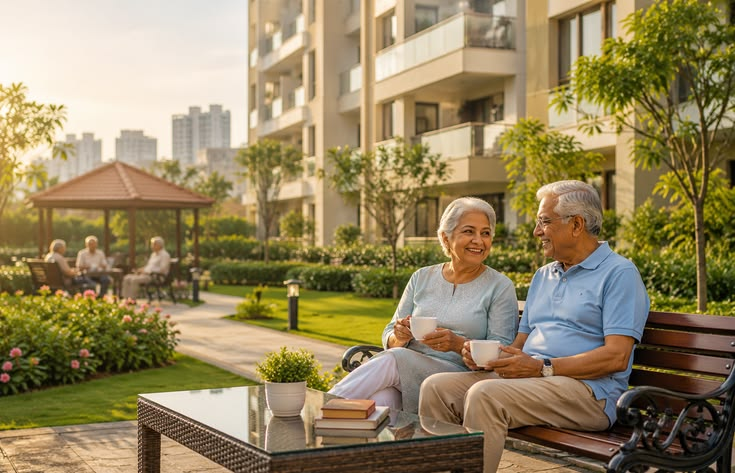

Bienestar
Promovemos actividades que favorecen la salud física, mental y emocional de los adultos mayores de nuestra comunidad.
"Conectando experiencias, bienestar y comunidad."
Un espacio creado para acercar a los adultos mayores del barrio Quiroga a las actividades programadas y servicios que fortalecen su bienestar, integración y calidad de vida.
Pensado para que encuentres de inmediato las actividades más próximas sin tener que buscar en todo el calendario.
Trabajamos con el corazón para ofrecer espacios seguros, activos y enriquecedores para nuestra gente mayor.
Promovemos actividades que favorecen la salud física, mental y emocional de los adultos mayores de nuestra comunidad.
Creamos espacios para fortalecer la integración, la participación activa y los vínculos de amistad entre vecinos.
Compartimos actividades, eventos y programas oficiales de manera clara, oportuna y muy fácil de consultar.
Creamos oportunidades para aprender cosas nuevas, compartir saberes valiosos, disfrutar y mantenerse siempre activos.
Encuentra actividades de bienestar, salud, recreación, cultura e integración pensadas para nuestra comunidad de Quiroga.
Consulta fácilmente las actividades programadas, sus horarios y lugares. Toca un día del calendario para ver qué habrá ese día.
Cada cifra representa sonrisas, momentos compartidos y el compromiso constante de construir un territorio amable para envejecer con dignidad.

"Ruta Dorada Quiroga nace como un espacio pensado para acercar a los adultos mayores de nuestra comunidad a actividades que promueven el bienestar, la participación y el encuentro."
Creemos firmemente en el inmenso valor, la experiencia y la sabiduría de nuestras personas mayores. Nuestro propósito es conectar la oferta institucional oficial de la Alcaldía Local de Rafael Uribe Uribe y del Centro Día con cada hogar del barrio Quiroga, facilitando el acceso a talleres, salud, recreación y cultura en un lenguaje sencillo y accesible para todos.
Las actividades se realizan en puntos comunitarios conocidos y de fácil acceso en la Localidad Rafael Uribe Uribe, Bogotá D.C.
Calle 31b Sur # 22 - 25, Quiroga, Bogotá D.C.
Sede de gimnasia dirigida y acondicionamiento físico adaptado.
Calle 31b Sur # 23 - 14, Quiroga, Bogotá D.C.
Sede de talleres artísticos, inclusión digital, estimulación cognitiva y apoyo nutricional.
Calle 32 Sur # 23 - 62, Quiroga / Rafael Uribe Uribe
Sede de sesiones del Consejo Local de Sabios y Sabias.
Estamos aquí para ayudarte. Comunícate con nosotros para conocer más sobre las actividades, inscripciones y programas disponibles para ti o tus familiares mayores.
Marca directamente 195 desde cualquier celular o teléfono fijo en Bogotá.
Fuera de Bogotá o conmutador alterno: (601) 338 7000
Escribe al +57 316 0231524 para resolver consultas de programas y eventos.
🕒 Lunes a viernes: 7:00 a. m. – 7:00 p. m.
Sábados: 8:00 a. m. – 12:00 m.
Ventanilla de atención para peticiones ciudadanas, orientación y trámites:
ventanillaelectronica@alcaldiabogota.gov.co
Consulta más detalles de programas sociales, convocatorias distritales y trámites en:
Bogota.gov.co